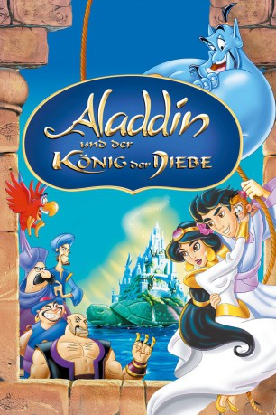
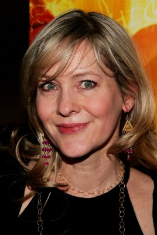

#3471 Aladdin und der König der Diebe
Alternativ: Aladdin and the King of Thieves
 
 IMDB-Wertung: 6.4 / 10
IMDB-Wertung: 6.4 / 10  Metascore: 0
Metascore: 0 
Ganz Agrabah ist wegen der bevorstehenden Hochzeit des Jahrhunderts in heller Aufregung. Doch bevor sich Aladdin und Jasmin das Jawort geben können, unterbricht Cassim mit seinen vierzig Räubern die Zeremonie. Er ist auf der Suche nach der Hand des Midas – einem Schatz, der alles, was er berührt, in Gold verwandelt. In einer turbulenten Verfolgungsjagd versucht Aladdin mit seinem Freund Dschinni nicht nur die Hochzeit zu retten, sondern kommt auch auf die Spur seines lange
Jahr: 1996
Dauer: 78 Minuten
FSK: 6
Land: USA Studio: ABCTonspuren: DD2.0 - ,
Untertitel:
Auflösung: 1080p (1920x1080) Größe: 4300 MB
Genre: Komödie, Fantasy, Animation/Trick, Familie, Liebe, Musical
Regisseur: Tad Stones
Drehbuch: Gilles Paquet-Brenner
Soundtrack:
Darsteller:
 Jim Cummings als Razoul
Jim Cummings als Razoul Gilbert Gottfried als Iago
Gilbert Gottfried als Iago-  Linda Larkin als Princess Jasmine
 Jerry Orbach als Sa'luk
Jerry Orbach als Sa'luk John Rhys-Davies als Cassim
John Rhys-Davies als Cassim- Scott Weinger als Aladdin
 Frank Welker als Abu / Rajah / Fazahl
Frank Welker als Abu / Rajah / Fazahl Robin Williams als Genie
Robin Williams als Genie Jeff Bennett als Zagoolien
Jeff Bennett als Zagoolien Corey Burton als Hakim
Corey Burton als Hakim Jess Harnell als Additional Voice Talents
Jess Harnell als Additional Voice Talents Clyde Kusatsu als Thief / Additional Voice Talents
Clyde Kusatsu als Thief / Additional Voice Talents Rob Paulsen als Additional Voice Talents
Rob Paulsen als Additional Voice Talents CCH Pounder als The Oracle
CCH Pounder als The Oracle Liz Callaway als Princess Jasmine , singing voice, uncredited
Liz Callaway als Princess Jasmine , singing voice, uncredited- Marin Mazzie als Chorus , singing voice, uncredited
 Val Bettin als Sultan
Val Bettin als Sultan- Joan Barber als Chorus , singing voice, uncredited
- Scott Barnes als Thief , singing voice, uncredited
- Merwin Foard als Cassim , singing voice, uncredited
- David Friedman als Chorus , singing voice, uncredited
- Paul Kandel als Thief , singing voice, uncredited
- Brad Kane als Aladdin , singing voice, uncredited
- Alix Korey als Chorus , singing voice, uncredited
- Peter Samuel als Chorus , singing voice, uncredited
- Gordon Stanley als Chorus , singing voice, uncredited
- Guy Stroman als Chorus , singing voice, uncredited
- Molly Wasserman als Chorus , singing voice, uncredited
Datei: X:\Kinder Disney HD\Aladdin\Aladdin und der König der Diebe (1996, FSK6, 1920x1080).mkv seit 12.04.2016
Festplatte: Kinder-Filme+Trick
 Es gibt insgesamt 8 Filme in der Gruppe 'Kinder Disney HD\Aladdin'
Es gibt insgesamt 8 Filme in der Gruppe 'Kinder Disney HD\Aladdin'